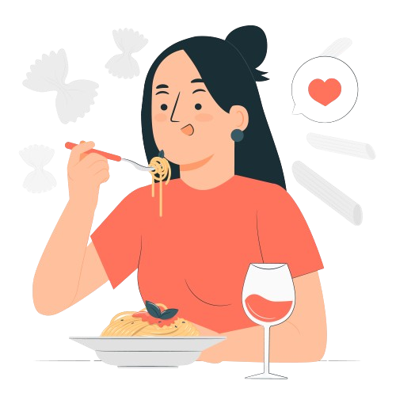
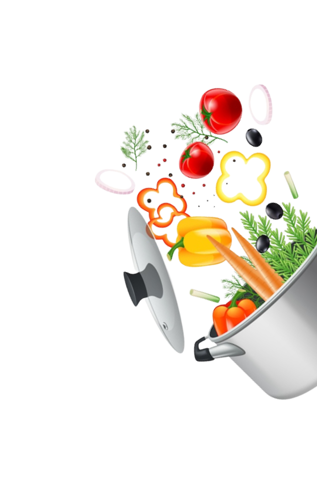

juntos contra odesperdício alimentarParticipe deste movimento sustentável que combate o desperdício de alimentos
ao resgatar produtos frescos de restaurantes, padarias e hortifrutis com descontos de até 70%.

33% dos alimentos produzidos sãodesperdiçados
Um terço dos alimentos produzidos para consumo humano é perdido
ou desperdiçado globalmente
O desperdício alimentar custa 1,2 bilhões de dólares por
ano
A cada ano, cerca de 2,8 bilhões de toneladas de alimentos são
desperdiçadas
Aproximadamente 828 milhões de pessoas enfrentam a fome
diariamente
O desperdício de alimentos contribui para cerca de 10% das
emissões de gases de efeito estufa.
As famílias são responsáveis por aproximadamente 47% do
desperdício global de alimentos
sobre nósSomos uma empresa comprometida em reduzir o desperdício alimentar e
promover uma alimentação sustentável. Nossa missão é conectar pessoas e estabelecimentos para combater o
desperdício, permitindo que alimentos excedentes sejam compartilhados com aqueles que mais precisam.
Através de soluções inovadoras e parcerias com a comunidade, buscamos criar um futuro mais justo e
sustentável, onde cada alimento seja valorizado e aproveitado ao máximo

baixe nosso app
Baixe nosso aplicativo e ajude a salvar o planeta evitando o
desperdício alimentar
Junte-se a nós nessa causa e faça parte da mudança que queremos ver no
mundo!